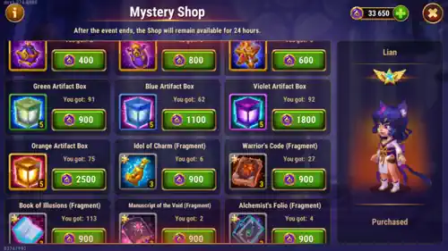

Lian's Way of Mystery shop can look tempting at first, but the best value comes from focusing on the items that are hardest to replace later, especially her artifact fragments.
If you spend your event coins with discipline, this shop can help both beginners and advanced players progress faster. If you spend them randomly on equipment, you will usually lose long-term value.

The ideal order is very clear: buy Lian's weapon artifact fragments first, then her book artifact fragments. Her weapon fragments are harder to farm, which makes them the most valuable long-term purchase in this event shop.
If you plan to invest in Lian seriously, this is the best place to secure progress that would otherwise take much longer. Event currency should go first into rare progression, not into items you can replace with normal daily play.
Equipment in this shop is usually unnecessary spending. You should only consider it if one specific item is extremely important for your main hero and you really need immediate progress.
Even then, spend with caution. Equipment can be obtained by spending energy in the campaign, and that gives you much more overall value than simply buying gear in the event shop.
Because of that, energy remains the best way to get equipment efficiently in Hero Wars Alliance.
If your goal is to maximize the Way of Mystery event, energy spending is one of the smartest ways to do it. The right amount depends on how much you want to spend.
This energy-first approach gives you gear, gold, experience, and better event mission completion all at the same time.
These items can be good for beginners because they offer extra resources and can help a newer account fill some gaps. Even so, I do not think their rewards are especially strong compared with artifact fragments or focused hero progression.
If you want to judge them yourself, just click the information icon in the upper-left corner of the shop screen and check the rewards before spending your event currency.
At first, it may seem strange to buy Lian soul stones here because they are also available in the Grand Arena Shop. Even so, I still think they are worth considering for beginners during this event.
The reason is simple: the Grand Arena Shop also sells equipment pieces that are heavily used for orange and red item crafting. Those equipment pieces become extremely important later, so spending too much Grand Arena currency on soul stones can slow down your future gear progress.
Because of that, using Way of Mystery event coins on Lian soul stones can still be a smart move early on. Try to get Lian to at least four stars during the event, then you can finish her evolution later with the Evolution Booster book instead of overspending now.
Remember that unlocking Lian's relic progression has two different requirements. You gain access to the Relics screen early in the game at team level 15, but that does not mean every hero can use relics immediately.
To actually use Lian's relic, she must reach level 50 and have at least four evolution stars. That is another reason why aiming for at least four stars during the event is a very practical target.
The best Way of Mystery shopping strategy is to think long term. Prioritize Lian's weapon artifact fragments first, then her book fragments, and avoid wasting too many coins on equipment unless it is a true emergency for your main hero.
If you are a beginner, buying Lian soul stones to reach four stars is still a strong option. After that, the Evolution Booster can finish the job later while you preserve other important resources.
Use your event coins wisely, farm gear with energy whenever possible, and let the shop cover the things that are much harder to farm outside the event.
If you want to plan your progress better, here are the most useful resources related to this event and to Lian's evolution:
Did you like our Lian Way of Mystery Shop Guide? Is there something you didn't understand or would like to suggest changes to? We invite you to join our comment section on the Alexandre Games Blog page. Feel free to express your opinion, clarify your doubts, and share your suggestions.
Click the button below to get started: